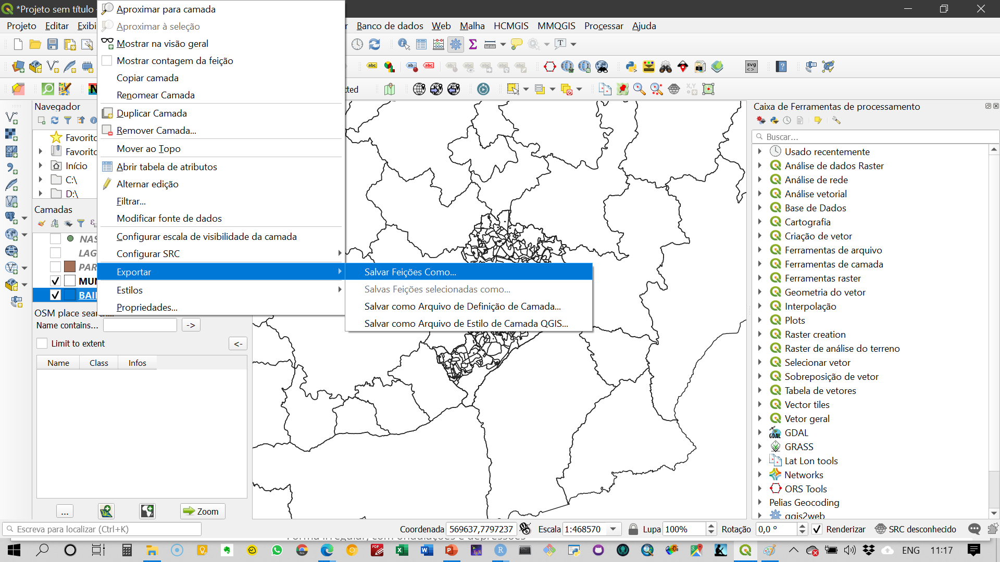
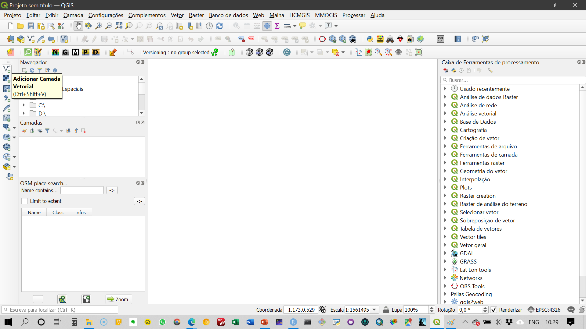
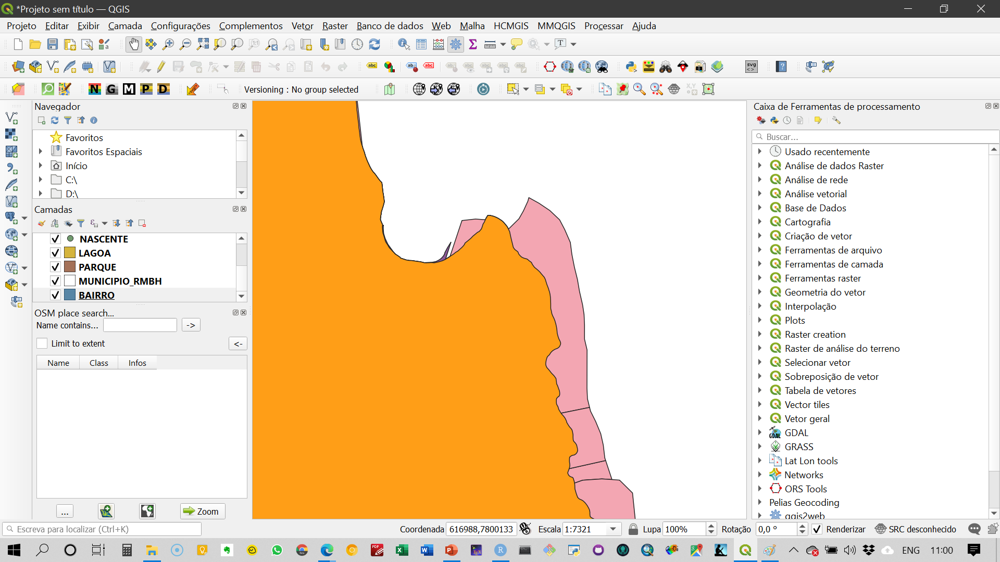
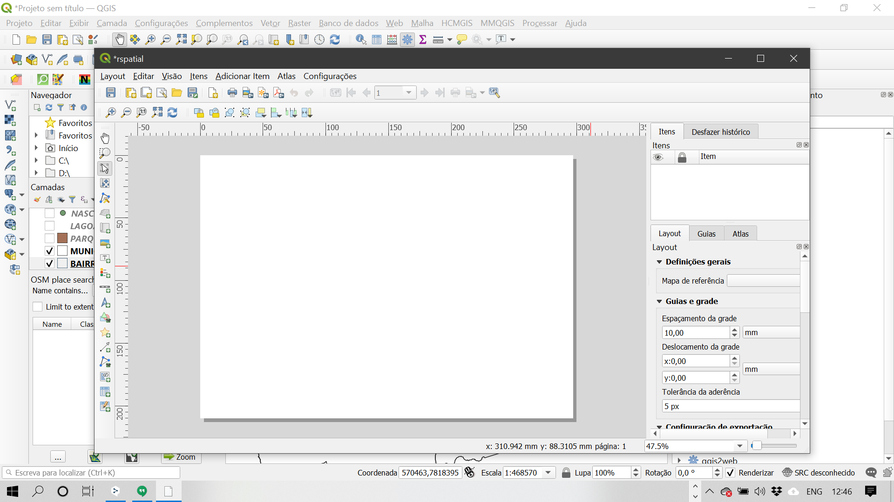

QGIS, GeoDa e R
Renata Lúcia Magalhães de Oliveira
2020-11-07
Dados considerados para desenvolvimento das atividades práticas neste curso e respectivas fontes:
- Dados de infecção por COVID-19 e suas consequências
- Dados da Google e da Apple sobre mobilidade na pandemia
- Dados socioeconômicos e demográficos dos recortes espaciais em análise
- Belo Horizonte e RMBH
- Unidades espaciais mais desagregadas de dados do COVID-19
| Arquivo | Unidade espacial | GCS/PCS | Área de estudo | Atributos | Fonte |
|---|---|---|---|---|---|
| bairro | Polígons - bairros | SIRGAS 2000 UTM 23S | Belo Horizonte | Dados gerais do censo 2010 | BHMaps |
| creches | pontos – equipamentos | SIRGAS 2000 UTM 23S | Belo Horizonte | Dados gerais do censo 2010 | BHMaps |
| edificação | polígonos – unidades construídas | SIRGAS 2000 UTM 23S | Belo Horizonte | Geometria das regionais | BHMaps |
| ensino_superior | pontos – equipamentos | SIRGAS 2000 UTM 23S | Belo Horizonte | Geometria dos municípios | BHMaps |
| escolas_estaduais | pontos – equipamentos | SIRGAS 2000 UTM 23S | Lagoa | Geometria da lagoa | BHMaps |
| escolas_federais | pontos – equipamentos | SIRGAS 2000 UTM 23S | Belo Horizonte | Geometria dos municípios | BHMaps |
| escolas_municipais_infantil | pontos – equipamentos | SIRGAS 2000 UTM 23S | Belo Horizonte | Dados do censo 2010 | BHMaps |
| escolas_municipais_fundamental | pontos – equipamentos | SIRGAS 2000 UTM 23S | Belo Horizonte | Lojas | |
| escolas_particulares | pontos – equipamentos | SIRGAS 2000 UTM 23S | Belo Horizonte | Vias | BHMaps |
| lagoa | polígono - lagoas | SIRGAS 2000 UTM 23S | Belo Horizonte | Lojas | BHMaps |
| município_rmbh | polígono – divisa municipal | SIRGAS 2000 UTM 23S | Belo Horizonte | BHMaps | |
| regional | polígono – regionais | SIRGAS 2000 UTM 23S | Belo Horizonte | BHMaps | |
| setor_censitario | polígono – setor censitário | SIRGAS 2000 UTM 23S | Belo Horizonte | BHMaps | |
| uso_solo | polígono – unidades de ocupação dos lotes | SIRGAS 2000 UTM 23S | Belo Horizonte | BHMaps | |
| vila_favela | SIRGAS 2000 UTM 23S | Belo Horizonte | BHMaps |
Arquivos de dados espaciais para Belo Horizonte
Ambiente de Trabalho do QGIS
Neste módulo são apresentados os elementos componentes do ambiente de trabalho do QGIS e suas respectivas finalidades.
Ambiente geral
QGIS é um Sistema de Informações Geográficas aberto, colaborativo e que apresenta interface composta conforme o Vídeo 1.

Complementos
As funcionalidades no QGIS estão disponíveis nas barras de ferramentas já instaladas e outras possibilidades estão presentes nos complementos que podem ser instalados conforme Vídeo 2

Sistemas de coordenadas
Mudança de datum e sistemas de coordenadas
Transformações on-the-fly
O mecanismo de transformações on-the-fly realiza reprojeções automáticas para fins de visualização/renderização.
São reprojeções dinâmicas, que não afetam o dado original


Reprojetar ou converter
Para reprojetar ou converter para outro formato: Salvar a camada com o novo sistema de referência/formato Botão direito sobre a camada > Save as…


Verificação de aprendizagem
Dados espaciais e sistemas de referência
- Abrir o
shapefilee verificar qual o sistema de coordenadas ativo.
- Transformar o sistema de coordenadas em
WGS84e salvar como um novo shapefile
- Transformar todos os
shapefilespara coordenadas projetadasSIRGAS 2000 - UTM 23 S - Mudar a cor dos dados vetoriais para apresentações que permitam a análise da sobreposição de camadas.
Trabalhando com arquivos Shapefile
Acesso aos dados espaciais
Vamos trabalhar com dados na estrutura shapefile - camadas vetoriais


Mudança de atributos dos shapefiles
Mudança de cores das camadas
- acesso às propriedades da camada

- mudanças das propriedades

Pode haver incompatibilidade entre feições causadas pela qualidade do dado vetorial ou por uso de diferentes projeções. Isso não inviabiliza o uso do dado espacial, mas podem ser necessárias conversões de sistemas de referência ou mesmo tratamento da geometria das feições.
Tabela de atributos
A tabela de atributos pode ser acessada pelo mesmo menu da camada. Na tabela de atributos são apresentadas as observações e os atributos de cada feição geométrica gerreferenciada. É análoga a uma planilha ou a um data.frame (R). É importante lembrar que só é possível associar um banco de dados (tabela de atributos) a um dado vetorial. Cada observação é uma feição geométrica desse dado.


Verificação de aprendizagem
Tabela de atributos e manipulação de dados espaciais
1. Verificar o número de observações e o número de atributos na tabela de atributos
2. Selecionar setores censitários com população menor do que 400 habitantes.
3. Exportar apenas os dados selecionados como um novo shapefile.
Layout de mapas
Edicação de Layout
Para gerarmos o layout de impressão dos mapas, é necessário acessar o ambiente de edição do layout.

O ambiente de edição de layout tem a seguinte estrutura:

Para inserir os elementos gráficos e textuais no layout, você deve acessar o menu à esquerda da página em branco e incluir mapas, legendas, indicador de norte, escala, dentre outros elementos.

Geocodificação
Material de suporte
O complemento que utilizo para geocodificação é o MMQGIS, que conecta direto com as APIs do Google e do OSM. Para fazer a geocodificação pelo Google, é necessária chave de acesso e token, pois acima de 2.500 requisiçoes por IP por dia são cobradas. Assim, recomendo a utilização do OSM.
O arquivo a ser organizado e importado no QGIS para geocodificação é no formato .csv e codificação UTF-8. Nesse arquivo devem ser organizadas as informações sobre o endereço em quatro colunas:
- address
- city
- state
- country
Na primeira coluna colocamos o endereço completo sem as informações de cidade, estado e país.

Mapas temáticos (categóricos e numéricos)
Material de suporte
Mapas temáticos são representações em feições geométricas do atributo de interesse utilizando elementos visuais para visualização da estrutura espacial desses dados.


Verificação de aprendizagem
- Gerar um mapa temático de renda do município de Belo Horizonte considerando a informação em setores censitários dados espaciais vetoriais.
- Gerar um mapa contendo os supermercados com representações que reflitam a área do estabelecimento.
- Gerar layout de impressão para cada um dos mapas anteriories contendo legenda, indicação de norte, escala. Salvar o mapa em .pdf e enviar pelo Canvas Prática 4.
Esta obra esta licenciada sob Licenca Creative Commons Atribuicao-Compartilha Igual 4.0 Internacional.